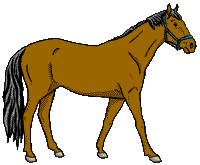

Ask Clever Hans a question
Your browser doesn't support speech recognition, so Hans can't hear you. If you can, try Chrome.
Speech recognition is not allowed, so Hans can't hear you. Please enable your microphone.

Try "Clever Hans, what's 3 plus 2?"
Hans who?
Brought to you by
cp
.